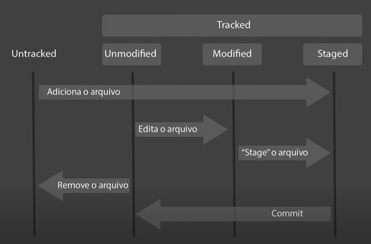
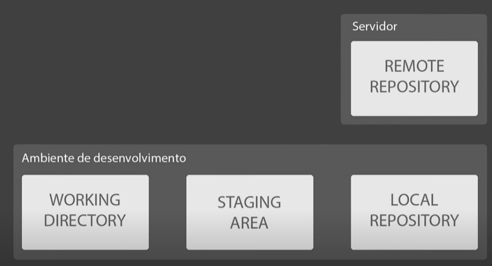

Introdução ao Git
Entendendo o que é Git e sua importância
- Foi criado em 2015 - repositório de versões de código. Criar e monitorar diversas versões de nossos códigos.
- Software é colaborativo - não é trabalho de um homem só.
- Git ≠ GitHub
- Benefícios
- Controle de versão
- Armazenamento em nuvem
- Trabalho em equipe
- Melhorar seu código
- Reconhecimento
Navegação via command line interface e instalação
Comandos básicos para um bom desempenho no terminal
- Não tem interface gráfica - linha de comando.
- Comandos WIN
- Listar pastas: dir
- Ir para uma pasta específica: cd
- cd / → vai para raiz
- cd nome_da_pasta → vai para a pasta
- cd .. → retorna ao diretório acima
- Limpar tela → cls
- Tecla TAB → auto completa o nome das pastas e arquivos
- Criar pastas → mkdir
- Criar arquivos → echo texto > nome_do_arquivo.extensão
- Deletar arquivos dentro da pasta → del nome_da_pasta
- Remover diretórios → rmdir nome_da_pasta /S /Q
- Ajuda do comando: nome_do_comando /?
Realizando a instalação do GIT
Aula prática
Entendendo como o GIT funciona por baixo dos panos
Tópicos fundamentais para entender o funcionamento do GIT
- A sigla SHA significa Secure Hash Algorithm (Algoritmo de Hash Seguro), é um conjunto de funções hash criptográficas projetadas pela NSA (Agência de Segurança Nacional dos EUA.
- A encriptação gera conjunto de caracteres identificador de 40 dígitos. É único.
- É uma forma curta de representar um arquivo.
Objetos internos do GIT
- Bloco básico de composição
- Contém metadados dentro dele
- SHA1; Tipo do objeto (BLOB); tamanho; \0; conteúdo do objeto
- comando correto para retornar a string criptografada de um BLOB:
- usando git hash: echo ‘conteudo’ | git hash-object –stdin
- usando sha1: echo -e ‘blob 9\0conteudo’ | openssl sha1
- Monta a estrutura de onde estão localizados os arquivos. Aponta para Blobs ou outras Trees.
- SHA1; Tipo do objeto (TREE); tamanho; \0; caminho do arquivo
- Se mudar uma estrutura de um arquivo, muda-se a encriptação de toda a árvore.
- Junta tudo, dá sentido para as alterações que são feitas.
- Aponta para a tree, para o “parente”, para o autor e para a mensagem. Tem um carimbo de tempo (timestamp).
- Commit também possui SHA1 → ele é o hash de toda a informação. Se altera o blob, altera a tree e altera o commit.
- Linha do tempo → o parente é o commit anterior.
- Commit é único para cada autor.
- Sistema distribuído seguro
- O código hosteado na nuvem. Estado final do código. Versão mais atualizada. Na máquina de todos os colaboradores tem o mesmo código. Todas as versões são confiáveis.
Chave SSH e Token
- Autenticação (para passar do Git para o GitHub) → nome de usuário e senha. Esse tipo de autenticação foi desligada.
- Chave SSH → é uma forma de estabelecer uma conexão segura e encriptada entre duas máquinas.
- Servidor do GitHub → máquina local.
- Clicar em Chave SSH para clonar o repositório
- Comandos para criar a chave SSH
- ssh-keygen -t ed25519 -C e-mail (igual ao do GitHub)
- entrar na pasta .ssh com cd
- cat (chave pública) → dar ls para ver o nome
- eval $(ssh-agent -s)
- ssh-add (id privado) → fazer esse comando sempre que entrar no computador, dentro da pasta do ssh.
OBS: Os comandos no Git são diferentes dos que ele ensinou
- Token: para clonar em HTTPS.
Primeiros comandos com GIT
Iniciando o Git e criando um commit
- git init → inicia um diretório de repositório do git.
- git config → configuração de arquivos dentro do repositório
- comando completo: git config - -global user.email “e-mail”.
- segundo comando: git config –global user.name “nome”.
- git add → para começar a adicionar um commit
- git commit
- comando completo: git commit -m “commit inicial” (neste texto, coloca-se as versões que vão sendo criadas).
OBS: Os comandos no Git são diferentes dos que ele ensinou
- LS → listar
- cd nome_da_pasta
- CTRL+L → limpar (ou clear)
- ls -a → mostrar arquivos ocultos
- mv → mover arquivo
Ciclo de vida dos arquivos no GIT
Passo a passo no ciclo de vida

- Git add → move o arquivo Untraked para Staged.
- git add * → pega todos os arquivos que precisam ser modificados.
- Unmodified para modified → quando modificamos (editamos) o arquivo. O git compara os SHA1 e faz essa mudança.
- Quando o arquivo está Modified e damos um git add, ele passa para o Staged.
- Se deletar um arquivo Unmodified, ele passa para o estado Untraked.
- Um arquivo que está no estado Staged quando recebe o comando commit passa a ser um arquivo Unmodified, e começa o ciclo novamente.

- Remote repository → GitHub
- Ambiente de desenvolvimento → tudo o que está na máquina local.
- Os arquivos vão ficar sempre alterando entre o Staging Area e o Working Directory. Quando se faz um commit, o arquivo passa a integrar o Repositório Local.
- git status → monitora o status do arquivo no repositório.
Introdução ao GitHub
Trabalhando com o GitHub
- git remote add origin (nome que se dá ao repositório) url (copiar e colar do GitHub).
- git remote -v → mostra a lista de repositórios remotos.
- git push origin master → para colocar o repositório local no remoto.
- Se não der certo, reiniciar a chave ssh.
- git pull origin master → para puxar os arquivos do repositório remoto para o local.
Resolvendo conflitos
Como os conflitos acontecem no GitHub e como resolvê-los
- Conflito MERGE → quando a alteração é feita na mesma linha do código. É necessário abrir os dois arquivos e resolver o conflito manualmente.
- Commita o arquivo novamente
- git clone (url do github) → para clonar um repositório para a máquina local.